01
Capture service evidence
Attach multiple photos to a job and keep the service details beside the visual record.
For field service professionals
Capture the job, confirm the outcome, and leave every customer with a polished service report.
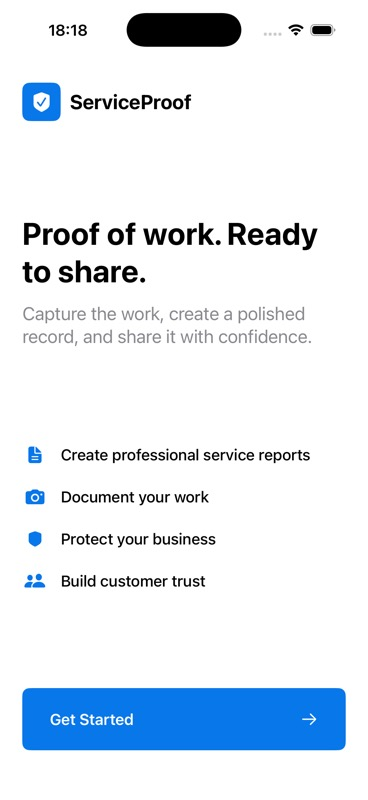
How it works
ServiceProof follows the natural order of a field-service visit. The professional stays in control, while the customer receives a clear record of the work.
Download ServiceProof on iPhone and begin with a short guided setup.
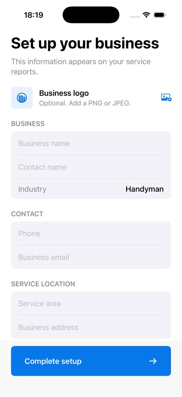
Set the business details that will appear on your customer-facing service reports.
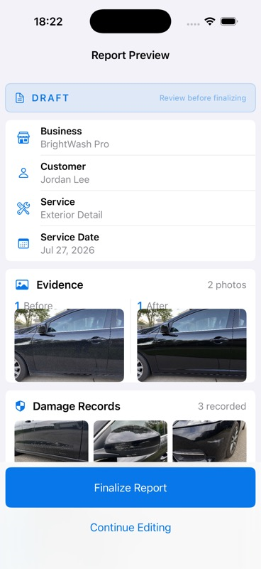
Add the customer, service, and job details before closing out the visit.
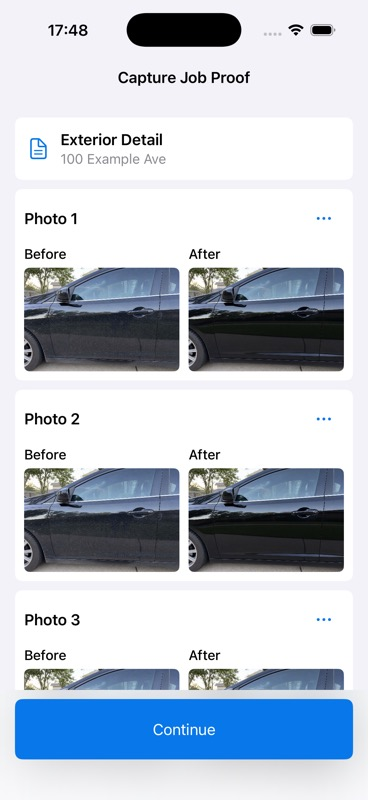
Document multiple before-and-after pairs and keep damage records separate.
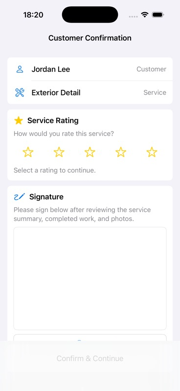
Let the customer review the result, choose a rating, and add their signature.
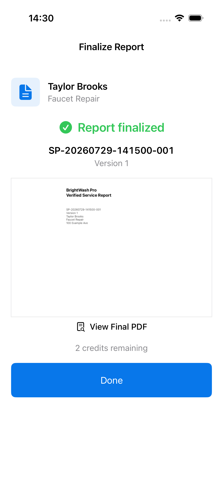
Create the formal report version, then open or share its PDF from the iPhone.
Visible, not vague
Customers should not have to guess what was done. ServiceProof brings paired photos, notes, checklist completion, and confirmation into one readable record.
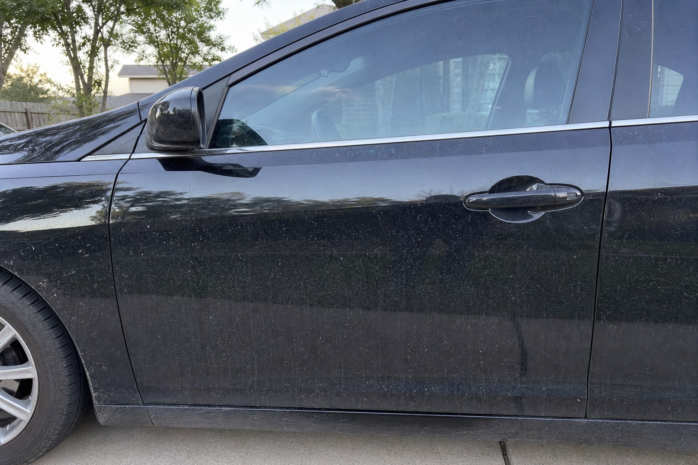
Inside the record
These app views show the information a service professional sees while documenting a job, reviewing it with a customer, and issuing the final version.
Attach multiple photos to a job and keep the service details beside the visual record.
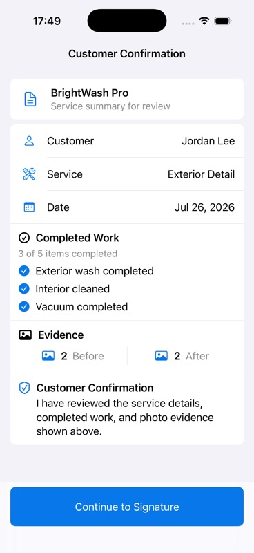
Review photo totals and completed work before collecting a customer rating and signature.
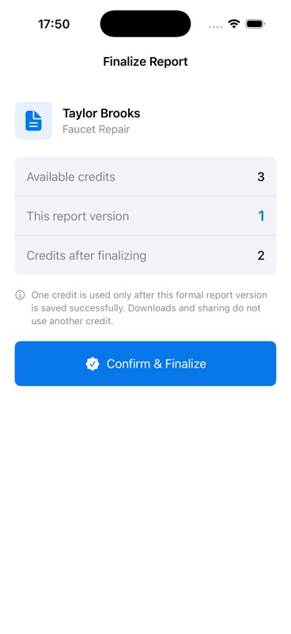
See the one-credit effect before creating the formal report version and its shareable PDF.
Made for work in the field
Each focused template gives a professional a practical way to show what they found, what changed, and what was completed.
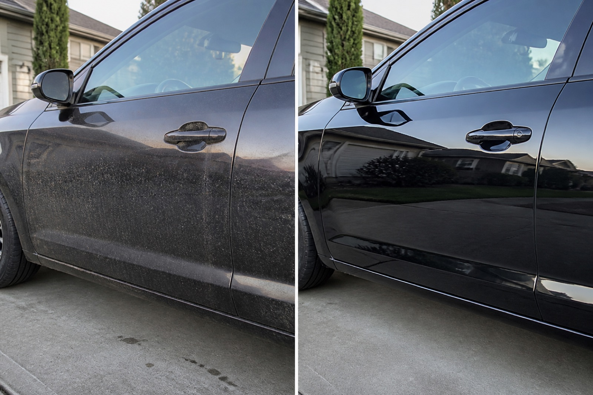
Show exterior condition, paint or wheel inspection points, completed detail steps, and the finished vehicle.
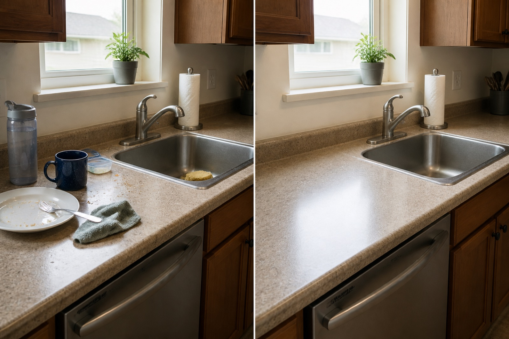
Record room-level requests, visible starting condition, completed areas, and the clean result left for the customer.
Document repair observations, materials or work notes, aligned finished work, and customer confirmation.
Industry images are illustrative examples of the kind of before-and-after evidence a report can contain. They do not show customer work.
Straightforward pricing
One Report Credit is used only when a formal report version is successfully finalized. Drafting, reviewing, downloading, sharing, and deleting do not use an additional credit.
View App Store detailsU.S. launch reference only. Apple shows the applicable price, currency, and tax before purchase. No subscription, auto-renewal, cash-out, or transfer.
Privacy by design
In V1, photos, signatures, and generated PDFs remain on your iPhone unless you choose to share them. ServiceProof does not enable iCloud report sync.
Read privacy detailsServiceProof for iPhone